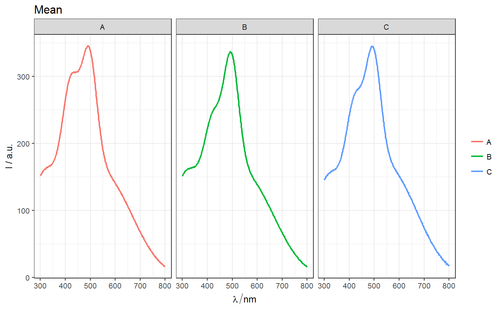
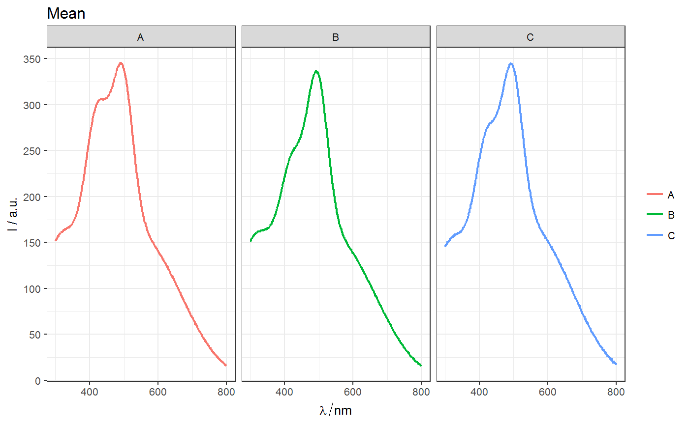

ggplot2 plots with continuous scaleConvenience function to control number of ticks in ggplot2
plots with continuous scale.
nTick_x(n = 2, min.n = 2, ..., pretty.args = list()) nTick_y(n = 2, min.n = 2, ..., pretty.args = list())
| n | An Integer giving the desired number of intervals. Non-integer values are rounded down. |
|---|---|
| min.n | nonnegative integer giving the minimal number of intervals.
If |
| ... | Further parameters to be passed to appropriate function
which is either |
| pretty.args | Further parameters to be passed to function |
Pretty breakpoints: pretty.
Other spPlot functions for ggplot2: facet_wl,
ggLims, gg_palette,
ggplot.hyperSpec
library(spHelper) library(spPlot) library(ggplot2) # Make a plot but do not print p <- qplot_spStat(Spectra2, "gr", mean, All.linetype = "solid") + facet_grid(.~gr) #Print the plot p# Correct number of ticks: p + nTick_x(2)p + nTick_x(2) + nTick_y(8)